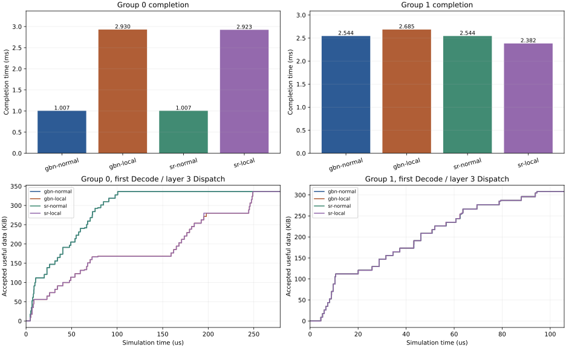
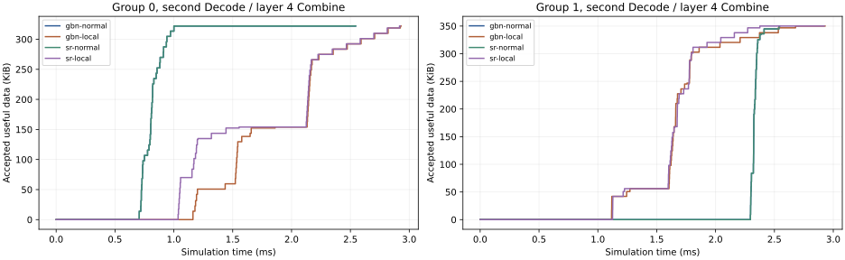

8份不同R1-AWQ/MMLU请求；两个EP4组共享同一网络。第一组热点接收端在前100微秒丢弃数据，第二组没有直接丢包。原层3、4，两步Decode；计算和部署为声明参考。
| 条件 | 服务完成 µs | 网络排空 µs | 组0完成 µs | 组1完成 µs | 重复载荷 B | 直接丢弃数据包 |
|---|---|---|---|---|---|---|
| gbn-normal | 2544.364 | 2544.364 | 1006.613 | 2544.364 | 122016 | 0 |
| gbn-local | 2930.103 | 2930.103 | 2930.103 | 2685.347 | 1181208 | 32 |
| sr-normal | 2544.477 | 2544.477 | 1006.681 | 2544.477 | 122016 | 0 |
| sr-local | 2922.925 | 2922.925 | 2922.925 | 2382.405 | 1158192 | 32 |
GBN：整段服务增加385.739微秒；未直接丢包组变化+140.983微秒。负值表示该组反而更早结束。
SR：整段服务增加378.448微秒；未直接丢包组变化-162.072微秒。负值表示该组反而更早结束。
这些差值不等于可优化收益。需进一步辨别排队、反馈、任务提交时间和恢复流量；SR还使用额外接收缓存及反馈扩展，不能称等内存对照。没有验证新算法或生产发生率。
机器摘要；本目录CSV保存逐消息、收发端统计及两组首层Dispatch累计有效到达曲线。完整逐包原件保存在对应运行的result.json。


未受损组第一步首层Dispatch完成时刻最大相差0.023微秒；最终组完成的变化发生在后续通信阶段。不能只看第一轮或单条流判断整段任务。
gbn-local在故障窗口的目标接收端为100%丢弃；整个网络全观察期则为32/815个数据到达尝试（3.926%），重传也计入分母。局部窗口比例与全网比例不可混用。
sr-local在故障窗口的目标接收端为100%丢弃；整个网络全观察期则为32/812个数据到达尝试（3.941%），重传也计入分母。局部窗口比例与全网比例不可混用。
四组都没有交换机自然丢弃或PFC暂停。
超时恢复请求分别为gbn-normal: 4、gbn-local: 23、sr-normal: 4、sr-local: 23；这些请求数不能当作实际重传包数。
两个故障条件中，未直接丢包组的实际源发送序号/长度多重集完全相同；GBN组完成时刻减去SR为+302.942微秒。
GBN未直接丢包组尾部消息：连接18，57,344B；历史最低参考速率159.493Mb/s，实际发包跨度1013.352微秒。
SR未直接丢包组尾部消息：连接18，57,344B；历史最低参考速率262.826Mb/s，实际发包跨度697.014微秒。
以上是当前参考模型中的限速/时序差异证据，尚未把全部差值因果分解为排队或反馈的独立贡献。
SR受损组最后一条消息准备好后，1.033毫秒才首次发送。发布时，该连接上前面的工作尚有62,680B未发送，不能把这段时间全部归为当前消息在交换机中排队。持久连接保留的拥塞状态和旧工作积压，需要一起分析。
GBN局部故障使整段服务相对正常条件变化+15.161%。
SR局部故障使整段服务相对正常条件变化+14.873%。
SR故障条件相对GBN故障条件的服务时间降低0.245%。这是成熟基线的实测差值，不是本项目新算法收益，也不是可消除空间上限。
未受损组在SR下反而比正常更快，否定了“更多重传必然让所有任务更慢”的简单解释。
先核对目标通信库是否允许Combine在本rank的Dispatch尚未完成时就绪：当前图允许这种重叠，真实路径可能有flush或计算流屏障。若重叠不合法，应修正图并关闭依赖该重叠的优化候选。再验证阶段/通道分离连接等已有方法的资源成本、参考拥塞控制与目标硬件的一致性，以及独立路由窗口/共享上行故障下的结果。不能靠调大故障或削弱基线维持创新空间。
当前前端按每个专家贡献复制激活，未实现现代DeepEP按目的rank去重、完整GPU通知/可见性或生产RoCE报文。EP4只用于有限通信段，不证明完整R1权重可部署；每个条件执行一次，不证明统计泛化。
尾部消息及反馈诊断 · 独立核验与五类篡改拒绝 · PNG图 · PDF图